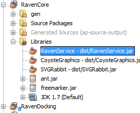
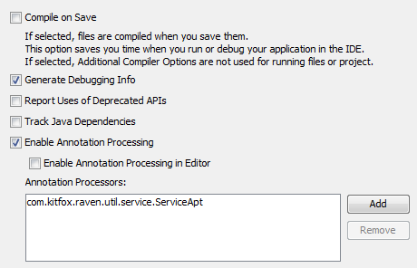

Usage
Creating and using services
Java allows you to create a plugin architecture through their services API. The idea behind services is similar to ordinary class inheritence.
You start by creating an interface or class that will serve as your root service provider.
Next you create one or more classes with implement or extend your service provider. Each of these classes must have a no-argument constructor so that it can be constructed without having to pass it any arguments.
Finally, each service a jar published must be listed in a text file in the jar's /META-INF/services directory. The name of this file must be the same as the fully qualified name of the service provider.
For example, say I was writing a program that let users learn about dinosaurs. Since third party developers might want to extend my core software, I want to use Java services to allow my program to discover allthe different dinosaur types it can work with. I start by creating my service provider base class:
package com.kitfox.dinosaur; interface DinoBase { public String name(); public Image picture(); public String description(); }
Next, I would create one or more services that implement my service provider:
package com.kitfox.dinoTypes; import com.kitfox.dinosaur.DinoBase; import java.awt.Image; class Triceratops implements DinoBase { public String name() { return "Triceratops"; } public Image picture() { return ...; } public String description() { return "A dinosaur with three horns"; } } ----------------------------------- package com.kitfox.dinoTypes; import com.kitfox.dinosaur.DinoBase; import java.awt.Image; class Stegosaurus implements DinoBase { public String name() { return "Stegosaurus"; } public Image picture() { return ...; } public String description() { return "A dinosaur with spiky plates running down its back."; } }
Finally I would create a text file in the META-INF/services directory named com.kitfox.dinosaur.DinoBase and add entries for each service this jar provides:
com.kitfox.dinoTypes.Triceratops com.kitfox.dinoTypes.Stegosaurus
Now that you've created and published all your services, you can easily find them at runtime. All you need to do is search through all the /META-INF/services/<serviceProviderName> files on your application's classpath and load all the services you find. Since Java 1.6, the ServiceLoader class has been added to the standard JRE which will do all this work for you, making loading services even easier.
Using Raven Services
The one tedious and error prone part of using services is keeping those service lists up to date. Raven Services uses annotation processing to allow you to simply mark a class as being part of a service. Then whenever you compile your code, the service lists will be regenerated.
To begin using Raven Services, you will first need to include RavenService.jar in your project's classpath.
The example above can be adapted to use Raven Services:
package com.kitfox.dinoTypes; import com.kitfox.dinosaur.DinoBase; import com.kitfox.raven.util.service.ServiceInst; import java.awt.Image; @ServiceInst(service=DinoBase.class) class Triceratops implements DinoBase { public String name() { return "Triceratops"; } public Image picture() { return ...; } public String description() { return "A dinosaur with three horns"; } } ----------------------------------- package com.kitfox.dinoTypes; import com.kitfox.dinosaur.DinoBase; import com.kitfox.raven.util.service.ServiceInst; import java.awt.Image; @ServiceInst(service=DinoBase.class) class Stegosaurus implements DinoBase { public String name() { return "Stegosaurus"; } public Image picture() { return ...; } public String description() { return "A dinosaur with spiky plates running down its back."; } }
The @ServiceInst annotation specifies that this particular class will be exported as a service instance. The (service=...) specifies the service provider this service is a member of. The service instance must be derrived from the service provider.
When you compile your code, you will need to set an option to tell the compiler to use the Raven Services annotation processor:
javac -Acom.kitfox.raven.util.service.ServiceApt ...
If all goes well, you should find the list of services generated in the same directory where all the compiled .class files are placed.
Using Raven Services with NetBeans
To use Raven Services with NetBeans, the first thing you will need to do is add RavenService.jar to your libraries:

Then open the project properties and make the following changes:
- Sources
- Make sure your source format is set to 1.6 or higher. Annotation processing does not work with earlier versions of Java.
- Build/Compiling
- Uncheck Compile on Save. NetBean's automatic code compilation does nasty things to annoation processors.
- Check Enable Annoation Processing
- Under Annotation processors, click Add and add the line "com.kitfox.raven.util.service.ServiceApt"
